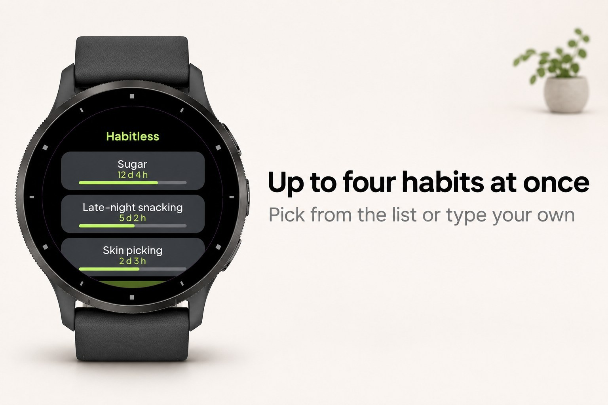
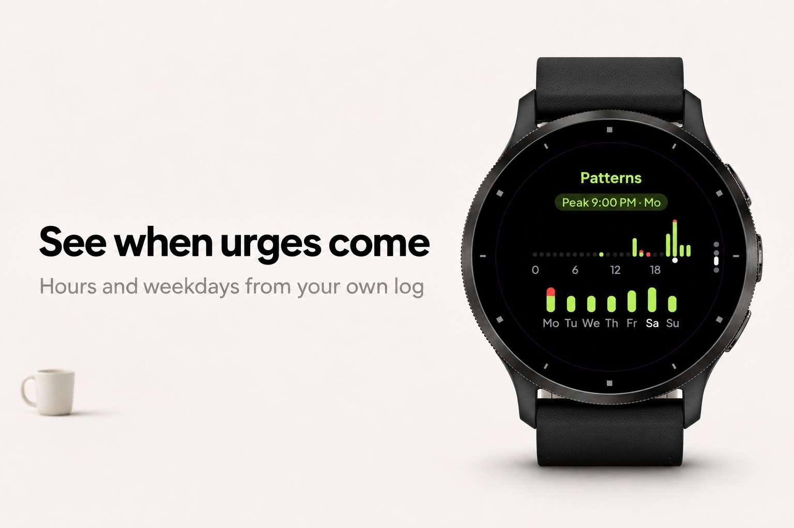
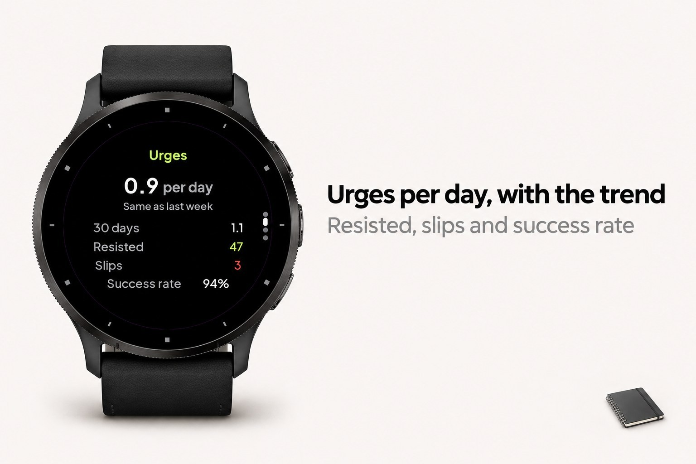
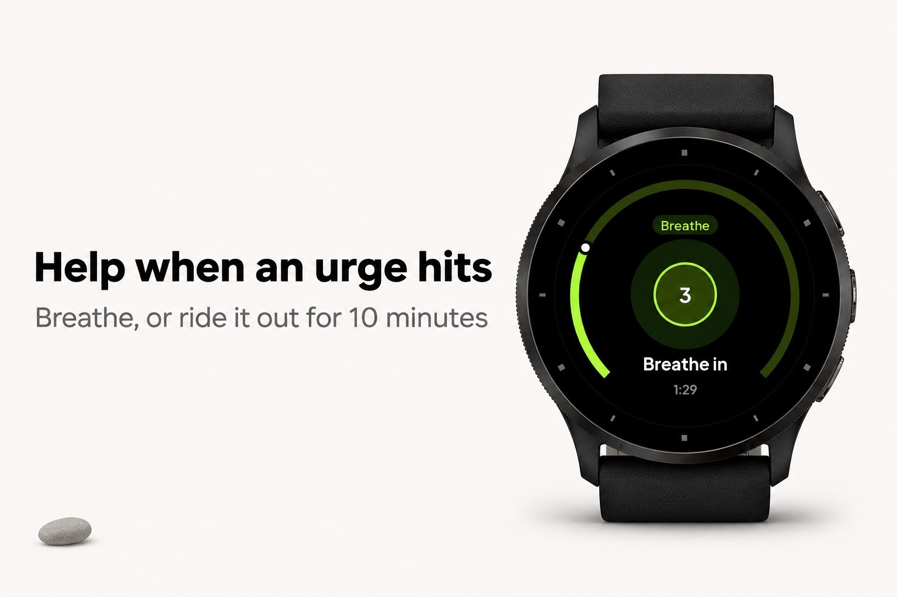

Habitless
Bad habit tracker with urge statistics.





Habitless tracks up to four habits you want to drop at the same time. Pick from a set list (sugar, late-night snacking, junk food, soda, binge eating, emotional eating, late caffeine, nail biting, skin picking, screen time, social media, online shopping, gambling, porn, procrastinating, swearing) or type up to two of your own.
Every habit has a live streak in days, hours, minutes and seconds, a ring toward the next milestone (1 day, 3 days, 1 week, 2 weeks, 1 month, 3 months, 6 months, 1 year) and the time still to go. Stopped earlier? Set the start date back by days or months.
Log an urge you resisted or a slip in two taps. A slip does not wipe your progress: your clean days, slip count and success rate stay. You choose whether a slip restarts the current streak.
Your own log is turned into numbers: urges per day over the last 7 and 30 days with the trend against the week before, the hours of the day and the weekdays when urges and slips come (24-hour and 7-day bar charts), the average time between slips and whether that gap is growing, your best streak, and a "risk now" reading from your own history (time of day, weekday and time since the last slip).
When an urge hits: a guided breathing exercise (4-6 or box breathing, 1 to 3 minutes, with a ring and vibration cues) or a 10-minute timer to ride it out. Finishing either logs the urge as resisted.
Optional per habit: money or minutes saved per day, shown as a running total. Optional daily check-in reminder and milestone notifications on watches that support them. The glance shows your longest running streak and the way to the next milestone, always current.
Works with buttons and touch; everything is reachable without holding a button. 16 languages. Habitless keeps a personal log and shows numbers from it; it is not a medical app and gives no medical advice.